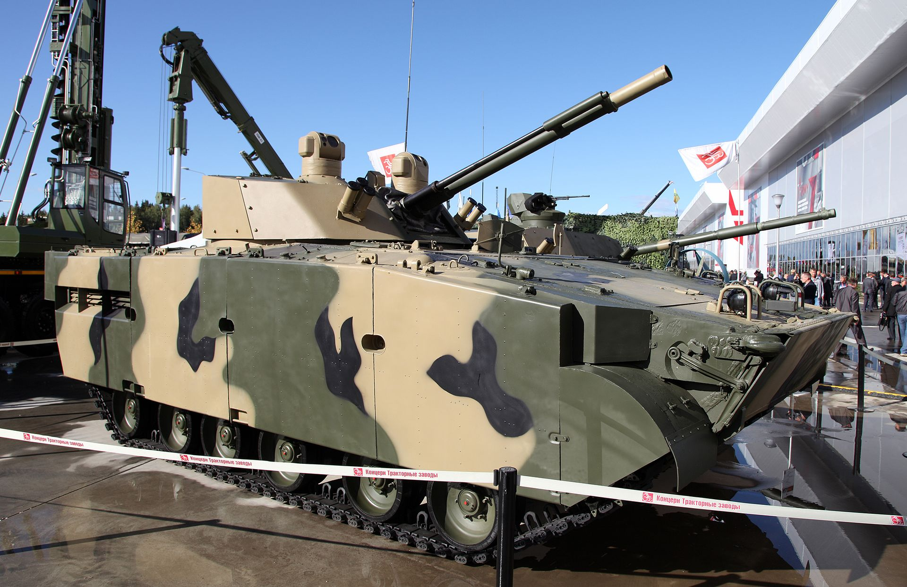

БМП-3
БМП-3 - российская боевая бронированная гусеничная машина, предназначенная для транспортировки личного состава к переднему краю, повышения его мобильности, вооружённости и защищённости на поле боя в условиях применения ядерного оружия и совместных действий с танками в бою. Боевая машина разработана курганским Специальным конструкторским бюро машиностроения. БМП-3 производится на ОАО «Курганмашзавод».
История
Разработка БМП-3 («Объект 688М») была начата в 1977 году. В 1983—1986 годах были проведены испытания и в 1987 году она была принята на вооружение Советской армии. В ходе государственных испытаний в районе мыса Опук два прототипа БМП-3 должны были на плаву на дистанции до 1500 м вести огонь по прибрежным целям из 30-мм автоматической пушки. Целью выступал танк Т-55, в результате прицел и приборы наблюдения танка были выведены из строя, 100-мм пушка была пробита в 4 местах, а на верхней лобовой детали появились изломы с трещинами. Широкой публике впервые была продемонстрирована на параде 9 мая 1990 года.
В конструкцию БМП-3 было внедрено 111 изобретений специалистов Специального конструкторского бюро машиностроения.
БМП-3 выиграла тендер и поступила на вооружение армии ОАЭ в количестве более 600 машин. Данные машины были оборудованы тепловизорным прицелом французского производства — такой же прицел используется на основном боевом танке армии ОАЭ — «Леклерк-Тропик». Бронемашина также закупалась рядом других стран. Машина показала после пробега высочайшие показатели на стрельбах, путь в 2000 км БМП-3 прошла в отличие от британских и американских машин.
В 1997 году КНР приобрела лицензию на производство боевого отделения БМП-3, которым впоследствии были вооружены китайские боевые машины пехоты Тип 97.
Описание конструкции
Броневой корпус и башня
{kind=link}
Лобовая броня выдерживает попадания бронебойно-трассирующего снаряда ЗУБР6 калибром 30 мм с дистанции 200 метров. Крыша и борта выдерживают пулю Б-32 калибром 12,7 мм с дистанции 100—200 метров. При установленных модулях накладной брони с учётом модулей и динамической защиты масса возрастает до 22,7 тонны, что не сказывается на надёжности ходовой части, но уменьшает её ресурс. При десантировании частичной защитой служит открываемая в вертикальное положение крыша над проходом в задней части двигателя. Топливные баки в передней части служат дополнительной защитой
Вооружение и приборы
На БМП-3 установлено следующее вооружение:
- 100-мм орудие / пусковая установка 2А70 весом 400 кг и технической скорострельностью 10 выстрелов в минуту, боекомплект 40 выстрелов (22 в автомате заряжания). ПТУР 9К116-3, БК — 8 ПТУР (3 в механизме заряжания).
- Автоматическая 30-мм спаренная пушка 2А72, скорострельность 330 выстрелов в минуту, боекомплект — 300 ОФЗ и 200 БТ выстрелов. Для достижения приемлемой кучности при автоматике, основанной на отдаче с длинным ходом ствола, применена подвижная муфта, соединяющая стволы 2А70 и 2А72.
- Пулеметы ПКТ 7,62х54: 2 курсовых в корпусе, управляются бойцами по бокам от механика-водителя (либо при их спешивании — дистанционно и синхронно механиком-водителем) и 1 спаренный с пушками в башне. Начальная скорость пули 855 м/с, боекомплект — 2000 патронов к каждому. Стабилизатор — 2Э52-2.
Возможна стрельба на плаву. Эффективная дальность стрельбы 4 км для 100-мм орудия, до 3,5—6,0 км — для ПТУР, 2 км — для 30-мм пушки. Максимальная дальность стрельбы снарядом 3УОФ19 и 3УОФ19-1 — 6,5 км.
Углы наводки 2А70 и 2А72 составляют по возвышению −6°/+60°, по азимуту 360°. Стреляные гильзы от пушки автоматически выбрасываются. Система управления огнём (СУО) имеет автоматический и ручной режимы и вводит большое количество нужных для точной стрельбы правок, возможна стрельба по низколетящим и зависшим вертолётам с применением СУО[12] (однако ряд экспертов подвергают сомнению эффективность зенитного огня из 30-мм пушки с темпом стрельбы 330 выстрелов в минуту)[13].
{kind=link}
Подвижность
Дизельный двигатель УТД-29 имеет малую высоту; для выхода десанта, размещаемого в средней части корпуса, используется специальный проход над двигателем. БМП-3 плавает со скоростью 10 км/ч, установлены водомёты внутри корпуса. Машина способна преодолевать стенку высотой 0,7 м, подъём 30° и крен 25°. Натяжение гусениц управляется с места механика-водителя.
Транспортабельность: железнодорожным, автомобильным, воздушным и морским транспортом.
Плавать может с минимальной подготовкой, есть функция заднего хода для плавания, есть помпа для откачки воды. Все 6 опорных катков с каждого борта — с гидроамортизаторами.
{kind=link}
{kind=link}